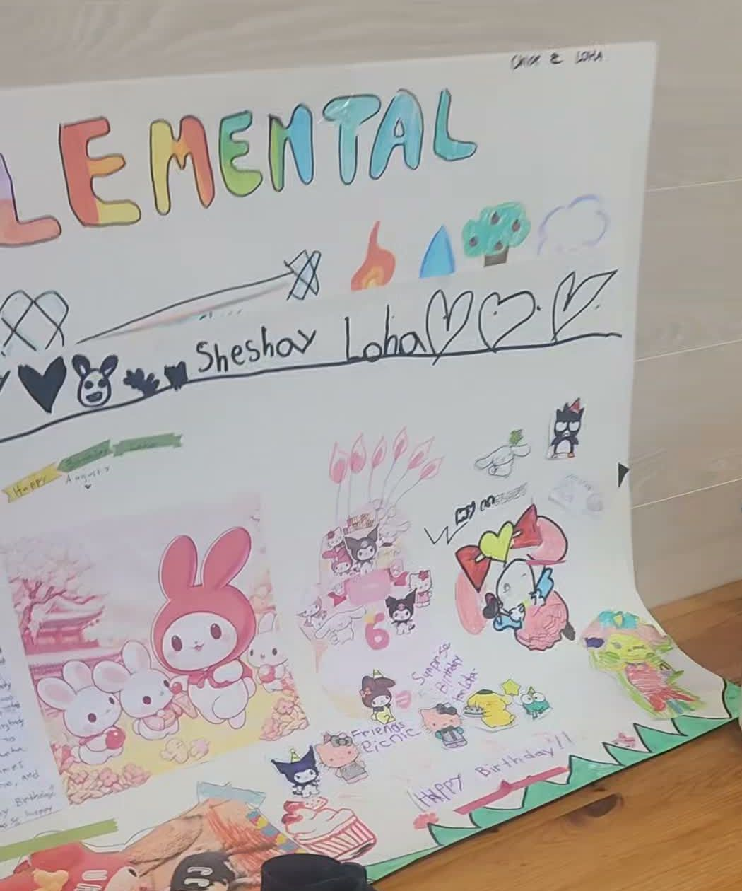
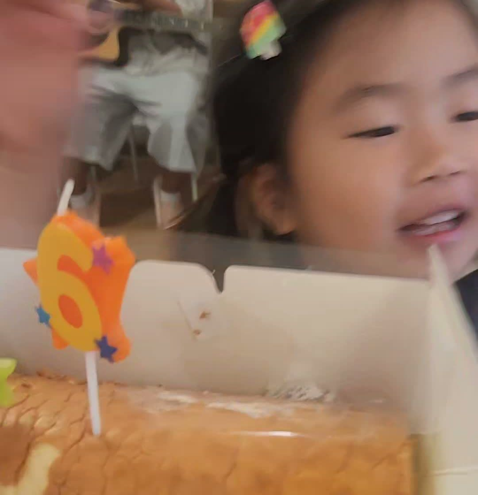
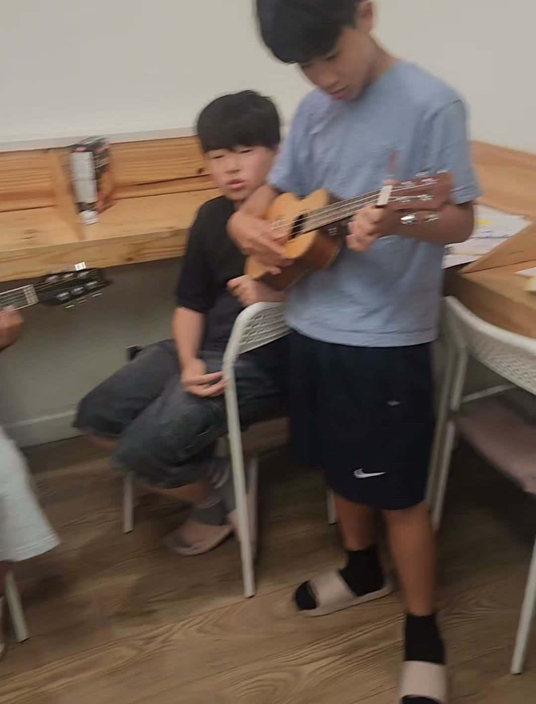
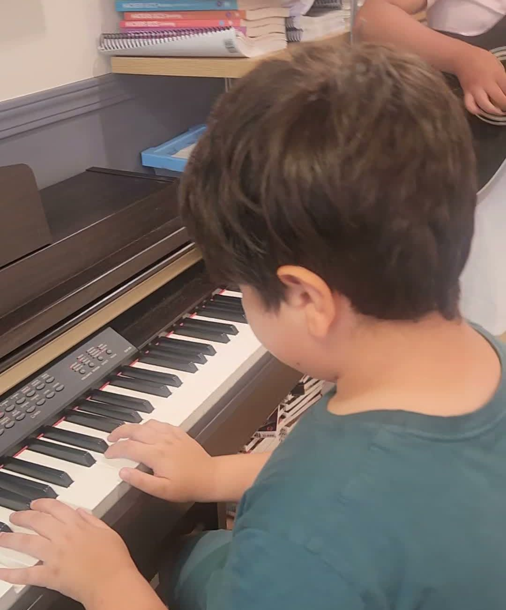
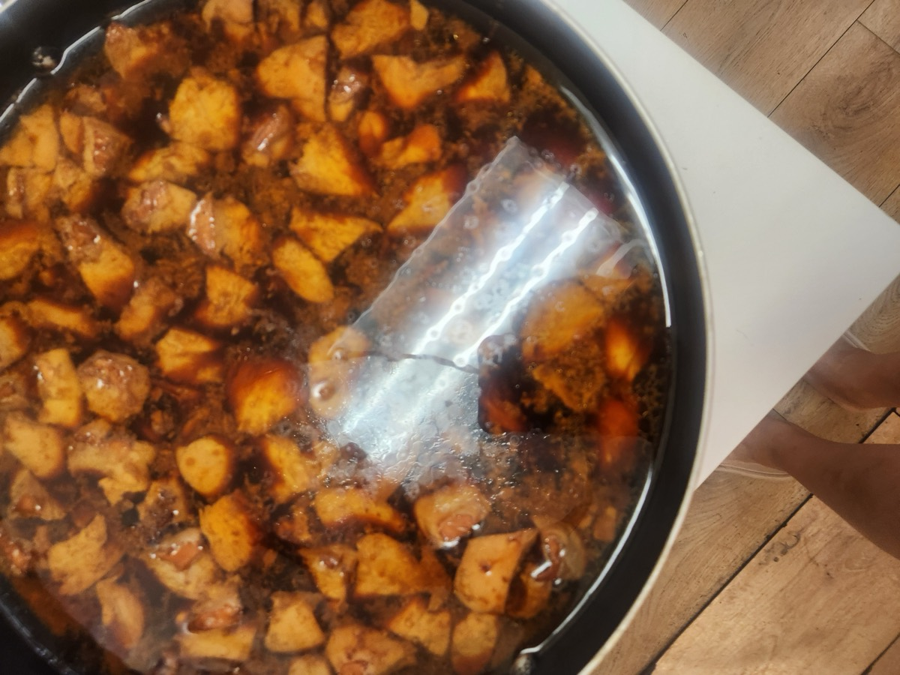
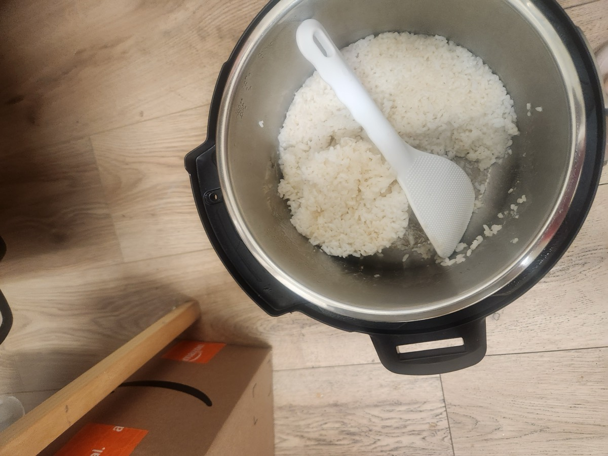
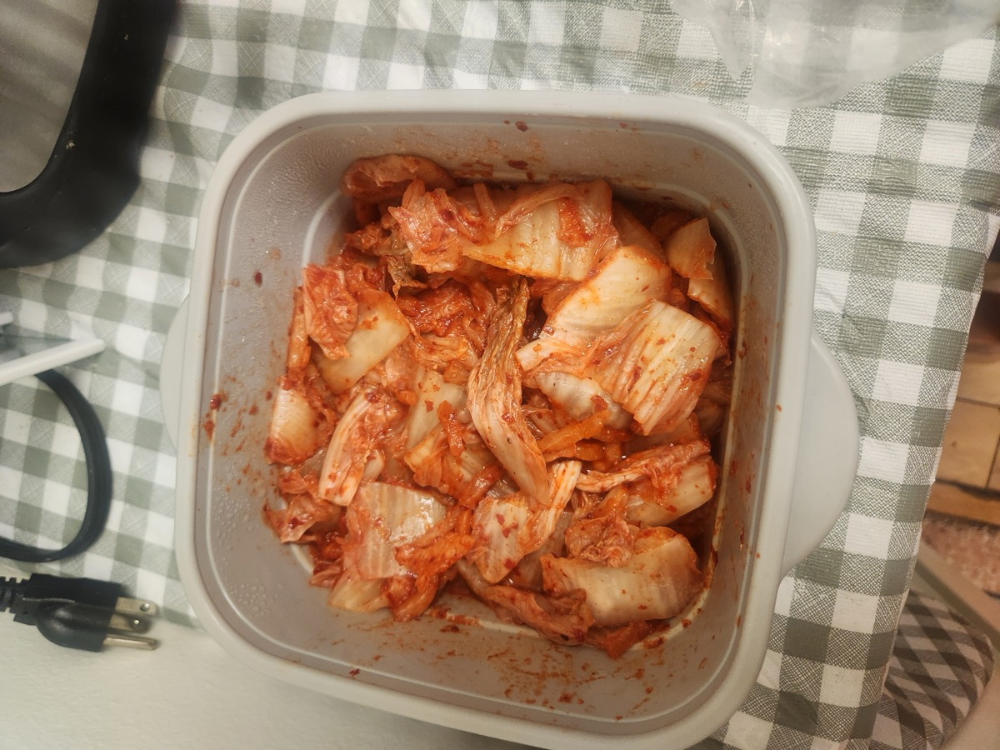
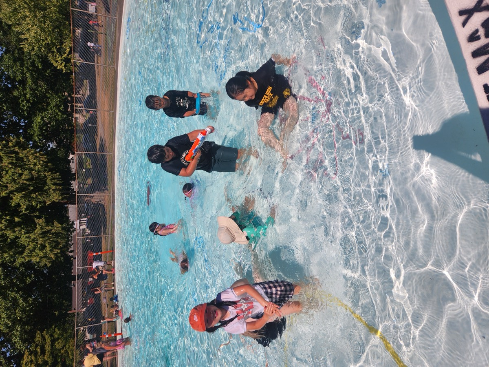
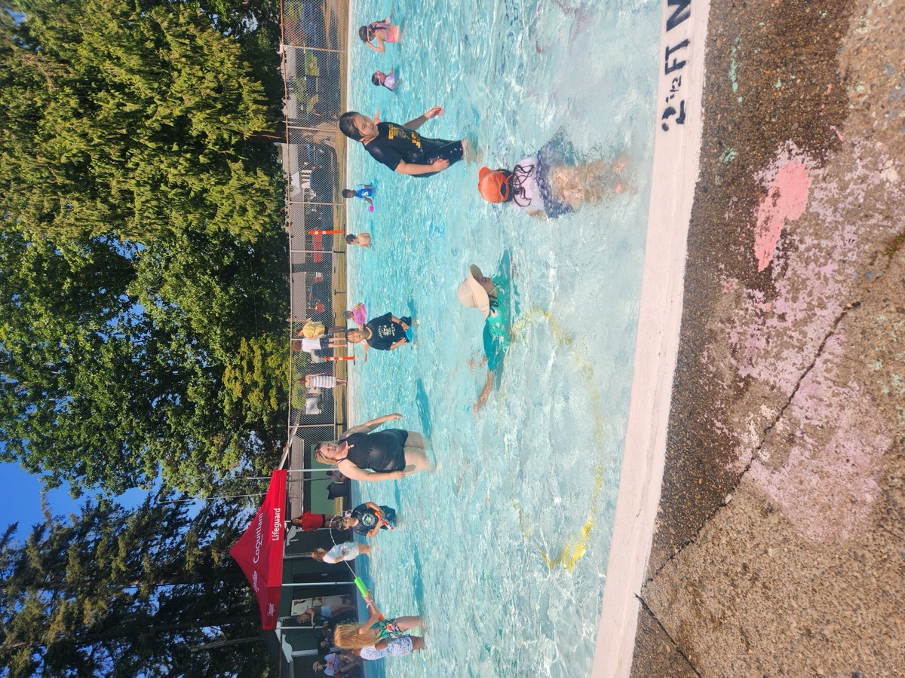
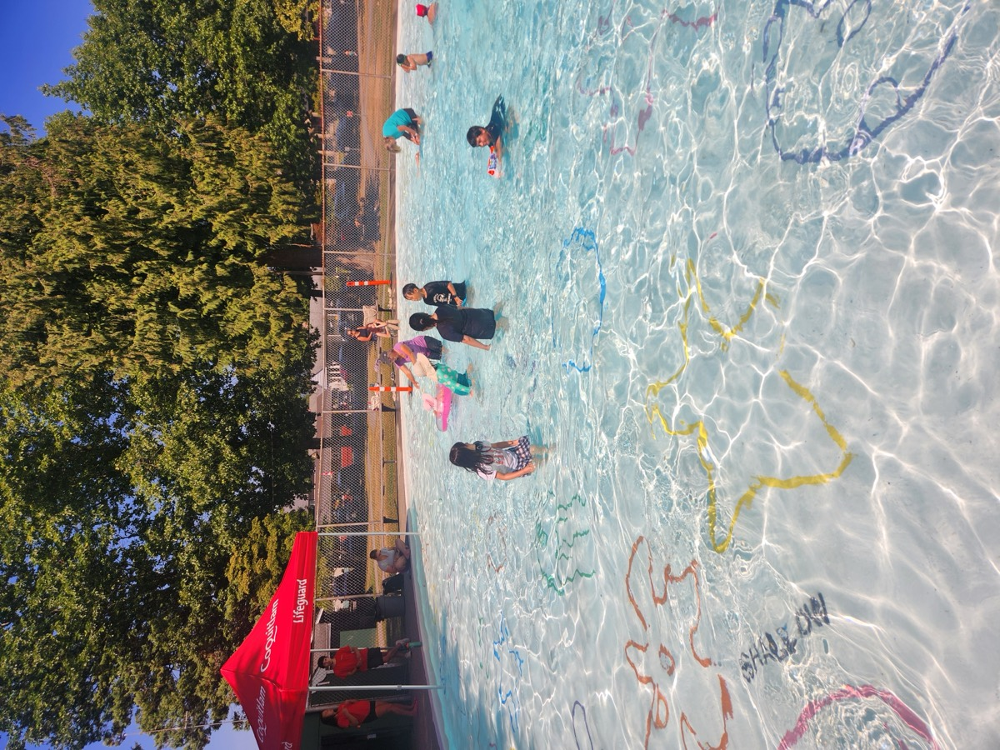

수료증, 깜짝 생일파티,
그리고 물놀이 🏅🎂
A lighter day, and a good one. Certificates were handed out, somebody turned six, and the whole afternoon was spent in the water.
🏅 Certificates of Participation Earned, not given
Four of our senior students received their Certificate of Participation today — awarded for academic excellence and participation across the summer camp. Each one carries a Best Award seal and the signatures of the director and their teacher. They have worked through ratios, branching stories, water chemistry and Canadian geography in the space of a few weeks, and it showed.

JC Afterschool English and Academic Summer Camp 2026
in Coquitlam, BC, Canada
🎂 A Surprise Birthday Card · cake · live music
One of our youngest students turned six today, and her friends had been busy. The card was a full poster board — an Elemental theme in hand-coloured bubble letters, a border of stickers and drawings, a picnic scene, hearts, and HAPPY BIRTHDAY in big letters along the bottom. Entirely made by the children.

Then the cake: a rolled sponge cake, a number 6 candle, and a room full of people who wanted to sing.

And the music was live. One student on guitar, another on ukulele, a third at the piano — a birthday band assembled on the spot, with dancing from everybody who was not holding an instrument.


Why we make room for this
A surprise party is not a break from the learning — it is some of it. Planning something in secret for a friend, making the card together, and playing an instrument in front of a room all ask for the same things the classroom does: preparation, cooperation and a little courage.
🍚 Lunch Rice · potatoes · kimchi
Lunch was Korean braised potatoes with rice and freshly cut kimchi — simple, warm and gone very quickly.



💦 The Pool All afternoon
Then out into a properly hot August afternoon. The shallow end for the youngest, floats and water guns for everybody else, and teachers in the water the whole time.



Certificates, cake and a swim — not a bad way to finish the week. Have a wonderful weekend! 🎉